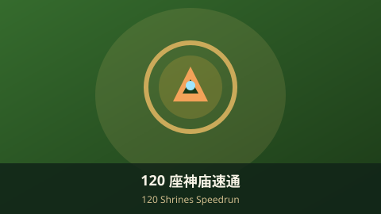
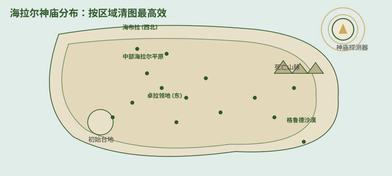

120 座神庙速通路线（旷野之息）120 Shrines Speedrun Route (Breath of the Wild)

神庙（Shrine of Trials）是《旷野之息》中最核心的探索目标：本体共有 120 座，其中 4 座位于四神兽内部，其余散布在海拉尔大陆。每通关一座都能获得 1 个"精灵祝福"，是扩充心数与精力的唯一来源。下面教你如何高效定位与速通全部神庙。Shrines of Trials are the backbone of exploration in Breath of the Wild: the base game has 120, four of them inside the Divine Beasts and the rest scattered across Hyrule. Each clears drops a Spirit Orb — the only way to grow your hearts and stamina. Here's how to locate and speedrun them all.
一、神庙基础：数量与奖励1. The Basics: Count & Rewards
- 本体 120 座：含 4 座神兽内神庙，其余 116 座在大陆各处。120 in the base game: 4 are inside the Divine Beasts; the other 116 are across the world.
- 精灵祝福：每座给 1 个，4 个可在"神灵之泉"兑换 1 个心之容器 或 1 个精力容器。Spirit Orbs: 1 per shrine; 4 orbs trade at a Goddess Statue for 1 Heart Container or 1 Stamina Vessel.
- 类型以解谜试炼与战斗试炼为主，少数为"祝福试炼"（只需打开宝箱即可通关）。Most are puzzle or combat trials; a few are "blessing" shrines you clear just by opening a chest.
二、如何找到隐藏神庙2. How to Find Hidden Shrines
- 登顶希卡塔：海拉尔共有 15 座塔，登顶后会解锁该区域地图，附近未激活的神庙会显示为红色光束。Climb the Sheikah Towers: 15 towers unlock regional maps; nearby unactivated shrines show as red beams.
- 开启神庙探测器：在卡卡利科村完成"晓之三姐妹"支线后，希卡石板的探测器功能解锁。Unlock the Shrine Detector: finish the "Seek Out 'Impa's Secret'" side quest in Kakariko to enable it on the Sheikah Slate.
- 设置追踪目标：在地图界面选一个传送点作为追踪对象，探测器会以金色声波提示最近神庙的大致方向。Set a target: pick a waypoint on the map; the detector pulses golden rings toward the nearest shrine.
- 其他线索：村民对话、amiibo、以及网上的互动地图也能帮你补全遗漏。Other clues: NPC hints, amiibo, and interactive maps help fill the gaps.

三、按区域高效清图3. Clear by Region
- 初始台地：4 座教学神庙，开局必清，顺带拿到基础能力。Great Plateau: 4 tutorial shrines you clear at the start.
- 中部海拉尔平原：数量最多，环绕海拉尔城堡，建议成片推进。Central Hyrule: the densest cluster, around Hyrule Castle — clear in sweeps.
- 卓拉领地（东）：与水神兽路线重合，可一并清掉。Zora's Domain (East): overlaps the water Divine Beast path.
- 海布拉（西北）：风雪地区，备好耐寒装备与料理。Hebra (Northwest): snowy — bring cold-resistance gear and food.
- 死亡山脉（中东）：高温区，需耐热装备或防火药剂。Death Mountain (Central-East): hot — need heat gear or fiery-proof elixirs.
- 格鲁德沙漠（西南）：沙暴区，雷神兽所在地，注意进入限制。Gerudo Desert (Southwest): sandstorm, home of the thunder Divine Beast.
四、速通顺序建议（至少 4 步）4. Suggested Speedrun Order (4+)
- 清初始台地：先拿磁力、制冰、遥感、时间停止四项基础能力。Clear the plateau: grab the four runes (Magnesis, Cryonis, Remote Bomb, Stasis).
- 登完全部 15 座塔：解锁整张地图，让神庙光束全部显现。Climb all 15 towers: reveal the full map so every beam shows.
- 按区域成片清：优先从离驿站近的区域入手，顺路激活鸟望台与传送点。Clear region by region: start near stables, activating towers and waypoints as you go.
- 用探测器补漏：每区域清完后，开探测器沿声波找漏掉的神庙。Sweep with the detector: after each region, follow the pulses to catch stragglers.
- 神兽内 4 座最后拿：随四神兽主线击败 Boss 后自动获得，不必单独寻找。Save the 4 inside beasts: earned automatically after each Divine Beast boss.
解谜手酸？ 推荐 Switch Pro 手柄，更精准的摇杆与更舒适握持，长时间探索不累手。Puzzle fatigue? A Switch Pro Controller gives precise sticks and a comfy grip for long sessions.
查看 Pro 手柄推荐 ↗View Pro Controller ↗
五、小贴士5. Tips
💡 实用建议：💡 Practical tips:
- 精灵祝福优先换心之容器（凑 13 颗红心才能拔大师之剑）。Trade orbs for Heart Containers first — you need 13 to pull the Master Sword.
- 神庙探测器一次只追踪一种，按需切换追踪目标。The detector tracks one target at a time — switch as needed.
- 部分神庙被世界谜题挡住（如巨石、冰封），先解决环境障碍才会出现光束。Some shrines are blocked by world puzzles (boulders, ice) — clear those first.
- 配合本站高清全要素地图可一次性圈出全部位置，效率最高。Pair with our HD full map to circle every location at once.
AdSense 广告位 2 · 文章底部AdSense Ad 2 · End of Article
审核通过后在此粘贴广告单元代码Paste ad unit code here after approval